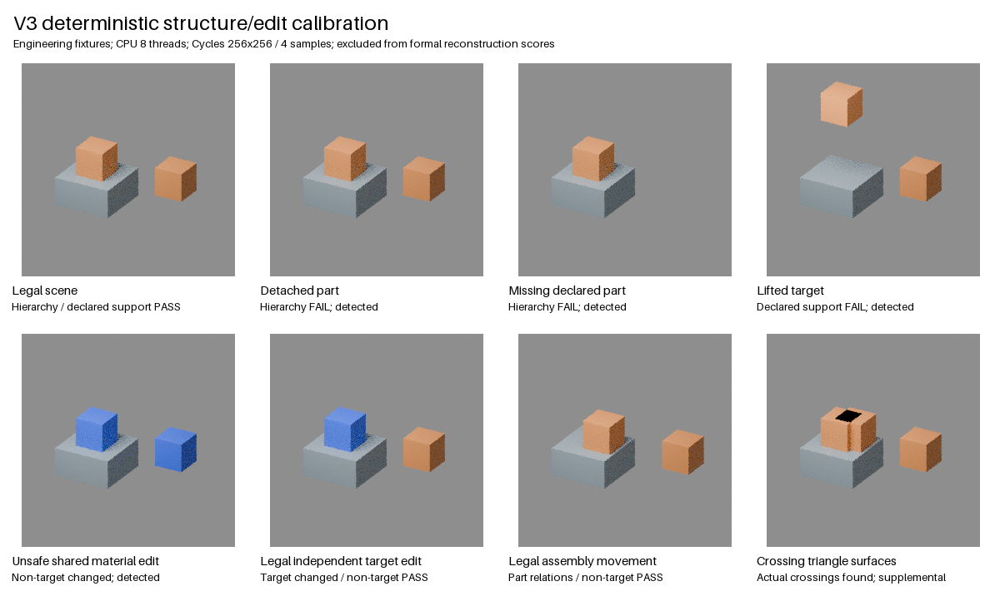

8 个固定工程夹具、12 个资格条件组合、同一新动作在 2 个配置复用；均无模型调用。这些是已知真值的机械检查，不是自然图像三维恢复精度、文字指令编辑或 M 能力提升证据。

| 夹具 | 实测通过 | 解释 | 证据 |
|---|---|---|---|
| correct | True | Hierarchy / declared support PASS | measurement / blend |
| detached_part | False | Hierarchy FAIL; detected | measurement / blend |
| missing_declared_part | False | Hierarchy FAIL; detected | measurement / blend |
| broken_support | False | Declared support FAIL; detected | measurement / blend |
| shared_material_bad_edit | False | Non-target changed; detected | measurement / blend |
| independent_local_edit | True | Target changed / non-target PASS | measurement / blend |
| correct_group_move | True | Part relations / non-target PASS | measurement / blend |
| triangle_crossing | False | Actual crossings found; supplemental | measurement / blend |
逐项CSV / 原始JSON / 两配置动作复用 / 必要/适用/缺测条件 / 仅重画脚本
支撑为归一化 AABB 接触近似；穿插采用实际三角面交叉，不能检测完全包含，也不能自动区分合法连接。断开父子层级保持当前世界位姿，因此仅看图片可能看不出错误。